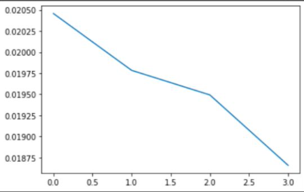
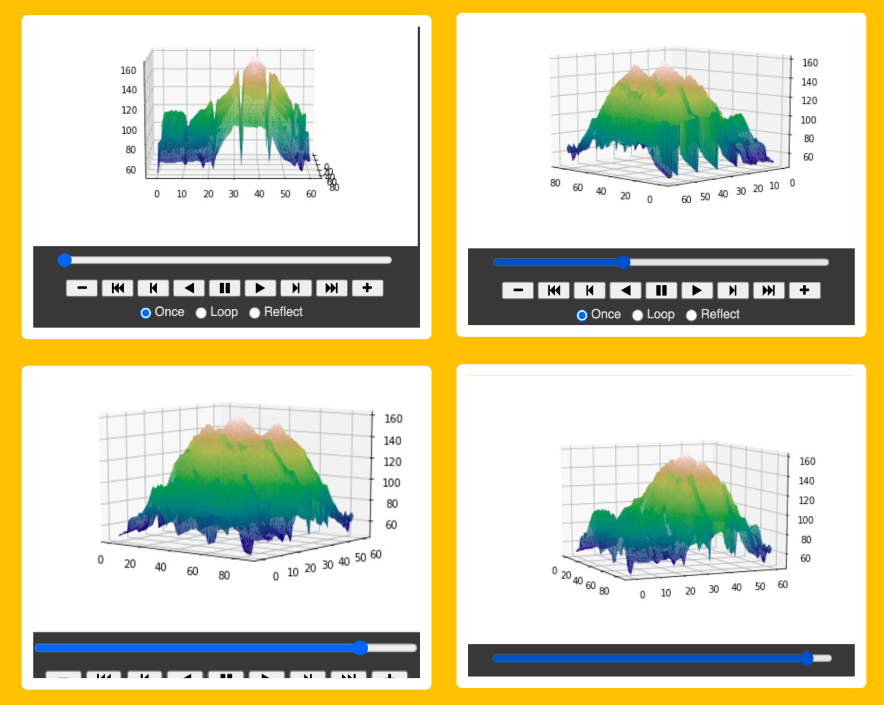
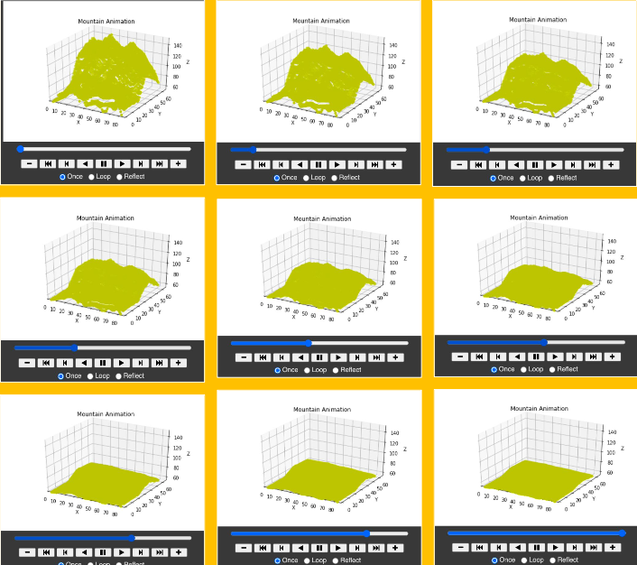

Over the course of the last year, I've been developing my understanding of Python. The two projects you'll find below are largely about
data analysis and the use of graphs. The first project is an analysis of COVID mortality rates in Maryland from last summer, using real data from the
time the project was created. The second project is a simulation of what weathering would look like on a mountain over time using animation. This
project also uses real data and incorporates it into the simulation and the design of the terrain itself.
M A R Y L A N D C O V I D M O R T A L I T Y R A T E S
2 0 2 0 A N A L Y S I S
I used real data from a .csv file containing COVID-19 mortality rates for states across the country, focusing on Maryland for this project.
I used the death rates to create a series of graphs to eventually calculate the approximate mortality rate of the state.
In most of my graphs, I had to find dy and dx, smooth them, divide, graph it, and then examine the end of the graph. The number the line in the
final graph appears to approach was the approximate the mortality rate. My final result was a Jupyter notebook with a graph of
smoothdy / smoothdx and an added text field explaining what limit I estimated.
First, I put all the positive cases over time into an actual graph that made the data easier to visualize and understand. I created another graph for
the deaths over time as well. Then, I graphed the derivates for both of the above graphs, and smoothed them out to make them easier to understand.
This laid the foundation for my next step.
Finally, I plotted smooth dx over smooth dy, combining the previous two graphs into one to estimate the mortality rate. I zoomed in on the very
end of the first graph to approximate the mortality rate as best I can. My results are shown in the images below.
Results Summary:
Over time, the mortality rate decreases (with some extremely small spikes that become noticeable near the end).
The mortality rate seemed to come close to about 2% at first, but I had to zoom in to get a more accurate value.
The mortality rate approached about 1.8%, which was just over half the mortality rate from the beginning of the pandemic (which was 3.4%)!
G R A P H:

W E A T H E R I N G P R O J E C T
This project was created alongside another junior ECG student, Natalie Earnhardt.
This project entails the creation of a simulation using real data. It was completed in September, after just taking an environmental science course. I was also developing an interest in animation at the time I began working on this.
Simulation: what erosion would look like on rough or mountain-like terrain. Making this simulation was difficult because no exact formula
could calculate erosion rates due to the many natural processes and factors involved.
One of the first deliverables of the project was the generation of a realistic, 3D surface plot. I created a .csv file with over five thousand
coordinates to generate a piece of rough terrain.
Each coordinate represented an altitude. To display it through code, I transformed it to a long format, and then added an animation that could
make the graph rotate and display all the angles of the terrain. To make the graph rotate, I used an azimuth angle.
Four factors for erosion in the simulation: precipitation, wind speed, temperature, and humidity.
Interactive: factors are adjustable through the use of sliders. There is also a drop-down menu with four different soil types/compositions:
loam, clay, cropland, and limestone.
In creating the formula, I created five variables: one for each factor, and a fifth variable for the land type. Each of the first four variables
were assigned maximum values. I figured out how to incorporate them into the formula with a series of if statements which standardized how much a certain value affected the simulation on a scale of zero to one. Different time scales were used on different land types for changes to be noticeable.
The final formula adds all four, standardized variables together based on the land type and timescale. To create the final, animated graph
that would display the erosion rate, the first thing I did was convert the original file with the coordinates for the terrain into a scatterplot.
The graph moved based on a variable called ‘i’, which changed the altitudes of the plot over time using the formula.
The final outcome of the project displays a 3D scatterplot of terrain which displayed the rate of erosion depending on the factors a user alters.
P A R T O N E - T E R R A I N D I S P L A Y ( S E E I M A G E O N E )
The purpose of this is to show a clear visualization of the mountain as the weathering animation is a scatterplot version of the terrain.
First, the required packages and files were imported for the display. Then, I transformed the data into a long format so that the plot could
be created. A trisurf command was used for the 3D plot because there was an x, y, and a z axis. To animate the visual, an azimuth angle was
used. An azimuth is an angular measurement in a spherical coordinate system.
P A R T T W O - F I N A L A N I M A T I O N
To actually animate the graph and display the animation based on the factors, a formula was created using the variables defined in the code snippet. This formula is called the
'weathering factor’ (ef), and was put together after carefully analyzing all research and real data implemented in the project.
Finally, I added a print statement that calculated the erosion factor using the formula.
The final graph is actually an animated 3D scatterplot because it was easier to work with rather than the other graph shown earlier.
That is why the line ax.scatter is used at the end of the # Creates the graph section.
The graph was animated using anim (fig, frame, frames, blit, repeat). This produces the result.
Final results of a sample animation are displayed in the second image below.The final graph can display the change in
limestone over 2,000,000 years, the change in clay and cropland over 100 years, and it displays the change in loam over 50 years.
These were timescales that were used to show noticeable change. Below, watch the blue slider to see the animation of weathering occurring over
time for loam.

